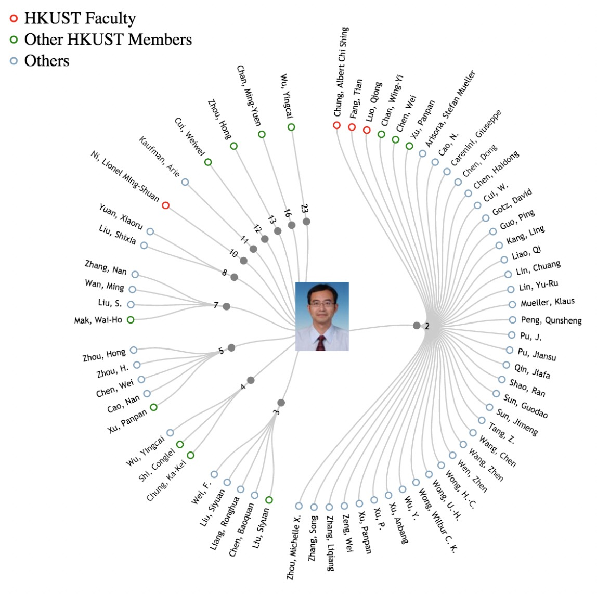

Since you are in group 2, your cheating method is unlimited. For each question, you may decide to cheat or not. If you decide to cheat on a question, please use one method and record the method you use. You will be asked to finish a questionnaire after the test. We suggest some possible cheating methods: use phone to search, use cheatsheet, use notes, open a new tab and search. Please at least cheat for 2 times.
Multiple Choice
Please notice that some questions may not have only one answer.
1. Which of the following (s) is (are) not sequential color scheme?
Do not cheat on this question
A. Rainbow
B. Red-green
C. Red-blue
D. Yellow-blue
2. Which of the following (s) are the principles suggested by Edward Tufet?
Cheating hints: Use mobilephone to search
A. Show entire scale
B. Consistent, linear scale
C. Avoid area, volume encoding
D. Show data in context
3. Which of the following visual channels is fully separable?
Cheating hints: Use notes “data_visual.pdf”
A. Position and Hue (Color)
B. Size and Hue (Color)
C. Width and Height
D. Red and Green
4. Which of the following visual channels is the most precise way to encode scalar values?
Cheating hints: Use cheatsheet
A. Angle
B. Area
C. Depth
D. Color luminance
5. Which of the following statements is called the visualization mantra?
Cheating hints: Open a new tab and search
A. No unjustified 3D
B. No unjustified 2D
C. Eyes beat memory
D. Overview first, zoom and filter, details on demand
Problem Solving
1. Please compute the lie factor for the following example by Tufte.
Cheating hints: Use cheatsheet
2. Please show five different ways to encode time and/or time lines.
Cheating hints: Use phone to send a message: “help” to Haotian LI or Huan WEI
Visualization Design
Visualization shows Prof. Qu’s collaboration network:
a. If the graph keep growing (e.g., Prof. Qu has 1000 collaborators), how to handle visual clutter?
Cheating hints: Use notes “large_graph.ppt”
b. How to show the evolution of Prof. Qu's collaboration network? (i.e., how does this network change over time?) Please design an example.